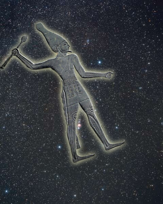

History
This website started as a project for school but became a passion project as the Metaverse is truly an exciting thing and we want to celebrate the person bringing it to us!
Mr. Zuckerberg's wikipedia page explains, "[Mark Zuckerberg] is an American business magnate, internet entrepreneur, and philanthropist. He is known for co-founding the social media website Facebook and its parent company Meta Platforms (formerly Facebook, Inc.), of which he is the chairman, chief executive officer, and controlling shareholder. Zuckerberg attended Harvard University, where he launched Facebook in February 2004 with his roommates Eduardo Saverin, Andrew McCollum, Dustin Moskovitz, and Chris Hughes. Originally launched to select college campuses, the site expanded rapidly and eventually beyond colleges, reaching one billion users by 2012. Zuckerberg took the company public in May 2012 with majority shares. In 2007, at age 23, he became the world's youngest self-made billionaire."
Mission
Our mission is to help promote XR technology and the Metaverse! Let's get that stock price to the mooooon!
Objectives
Our objectives of this project are: